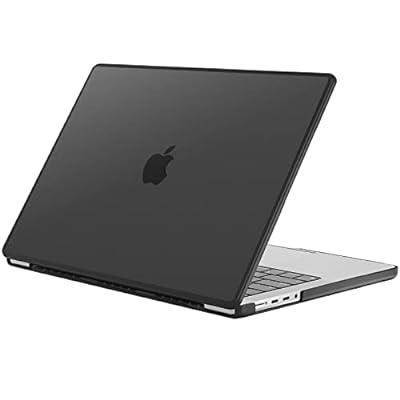

HP Laptop
Description
Introducing the latest innovation from HP, the HP 250 G9 laptop, designed to elevate your computing experience to new heights. Boasting a sleek and modern design, this laptop combines style with functionality, making it the perfect companion for both work and play. Powered by the latest generation Intel/AMD processor, the HP 250 G9 delivers lightning-fast performance, allowing you to multitask effortlessly and tackle demanding tasks with ease. Whether you're crunching numbers, editing videos, or gaming, this laptop handles it all without breaking a sweat. Equipped with a vibrant 15.6' inch display, every image comes to life with stunning clarity and detail. Whether you're streaming your favorite movies, immersing yourself in the latest games, or simply browsing the web, you'll enjoy an unparalleled visual experience. With ample storage space and memory options, you can store all your files, media, and applications conveniently without worrying about running out of space. Plus, with advanced connectivity options including USB-C, HDMI, and more, you can easily connect to all your favorite peripherals and accessories. Designed with productivity and portability in mind, the HP 250 G9 is ultra-lightweight and slim, making it perfect for life on the go. Whether you're traveling for work or leisure, you can take your laptop with you wherever you go without sacrificing performance or style. Experience the next level of computing with the HP 250 G9 laptop. Upgrade your productivity, elevate your entertainment, and unleash your creativity with this powerhouse device.
Macbook Air

Description
Introducing the MacBook Air, a true marvel of engineering and innovation from Apple. Designed to push the boundaries of what's possible in a thin and light laptop, the MacBook Air delivers an unparalleled combination of performance, portability, and endurance. At the heart of the MacBook Air lies Apple's groundbreaking M1 chip, a marvel of silicon engineering that redefines what a laptop processor can achieve. With its powerful CPU, GPU, and Neural Engine, the M1 chip delivers blazing-fast performance for everything from everyday tasks to demanding creative workflows. Whether you're editing videos, compiling code, or simply browsing the web, the MacBook Air handles it all with ease. Complementing the M1 chip is the MacBook Air's stunning Retina display, which brings your content to life with vibrant colors, razor-sharp detail, and True Tone technology for natural-looking colors in any lighting environment. Whether you're watching movies, editing photos, or working on spreadsheets, every pixel is rendered with breathtaking clarity and precision. Despite its slim and lightweight design, the MacBook Air packs a powerful punch when it comes to battery life. With up to 24 hours of battery life on a single charge, you can work, play, and create all day long without having to worry about finding a power outlet. Crafted from 100% recycled aluminum, the MacBook Air is not only environmentally friendly but also incredibly durable and stylish. Its sleek and iconic design is as functional as it is beautiful, with a comfortable keyboard, spacious trackpad, and a range of ports for connecting all your devices and accessories. With macOS, the MacBook Air offers a seamless and intuitive computing experience, with features like Siri voice control, iCloud syncing, and a wealth of built-in apps designed to enhance your productivity and creativity. Whether you're a student, a professional, or a creative enthusiast, the MacBook Air is the ultimate tool for unlocking your full potential.
Dell Inspiron
Description
Introducing the Dell Inspiron, a versatile and dependable laptop designed to empower users with seamless productivity and immersive entertainment experiences. Crafted with precision engineering and innovative features, the Dell Inspiron series redefines the standards of performance and reliability in the laptop market. Equipped with powerful Intel or AMD processors, the Dell Inspiron offers remarkable speed and responsiveness to handle a wide range of computing tasks effortlessly. Whether you're multitasking between applications, streaming high-definition content, or tackling demanding projects, this laptop ensures smooth performance and efficient workflow. Immerse yourself in vibrant visuals and crisp detail with the Dell Inspiron's stunning display options, available in various sizes and resolutions to suit your preferences. Whether you're editing photos, watching movies, or browsing the web, every image comes to life with vivid colors and sharp clarity, enhancing your viewing experience to new heights. With ample storage and memory configurations, the Dell Inspiron provides the flexibility to store your files, multimedia content, and applications conveniently without compromising on performance. Plus, with a range of connectivity options including USB ports, HDMI, and more, you can easily connect to external devices and accessories for enhanced functionality. Designed for portability and durability, the Dell Inspiron features a sleek and lightweight design that makes it ideal for users on the go. Whether you're commuting to work, attending classes, or traveling for leisure, this laptop is your reliable companion for productivity and entertainment. Experience the perfect blend of performance, reliability, and affordability with the Dell Inspiron series. Whether you're a student, professional, or casual user, the Dell Inspiron empowers you to achieve more, create more, and enjoy more in every aspect of your digital life.
Alienware laptop

Description
Unleash your gaming prowess with Alienware laptops, the ultimate choice for hardcore gamers and performance enthusiasts alike. Engineered to dominate any gaming arena, Alienware laptops combine cutting-edge technology, innovative design, and uncompromising performance to deliver an unparalleled gaming experience. Powered by high-performance Intel and AMD processors, Alienware laptops offer lightning-fast speeds and seamless multitasking capabilities. Whether you're battling fierce opponents in intense multiplayer games or exploring vast virtual worlds, Alienware keeps you ahead of the competition with its unmatched processing power. Immerse yourself in the action with Alienware's stunning displays, featuring high refresh rates, vibrant colors, and ultra-responsive panels. From fast-paced shooters to immersive RPGs, every frame is rendered with breathtaking detail, ensuring you never miss a moment of the action. Designed for maximum performance and durability, Alienware laptops feature advanced cooling systems to keep temperatures in check during even the most intense gaming sessions. With innovative thermal management solutions, Alienware laptops deliver consistent performance without throttling, allowing you to push your hardware to its limits without compromise. Experience gaming like never before with Alienware's customizable RGB lighting effects, allowing you to personalize your laptop to match your gaming setup and style. From dynamic lighting patterns to customizable key bindings, Alienware puts you in control of your gaming experience like never before. With Alienware's signature AlienFX lighting system, you can create immersive lighting effects that sync with your games, music, and more, transforming your gaming environment into a mesmerizing spectacle of light and color. Whether you're a casual gamer or a hardcore enthusiast, Alienware laptops are the ultimate choice for gamers who demand the best. Elevate your gaming experience to new heights with Alienware, the undisputed leader in gaming technology.